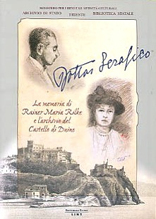

Rilke… c’est moi!
Cisza obrazów. Oddech posągów. Mowa, gdzie mowy się kończą. Czas ginącego serca. Przemiana uczuć w słyszalny krajobraz.
Ostatnie moje wpisy, jakkolwiek podejmują rozmaite tematy, nigdy nie pomijają postaci Rilkego i odniesień do Rilkeańskiego wszechświata. Dlaczego, pisząc o nowej wystawie czy publikacji, podziwiając któreś z arcydzieł sztuki czy literatury, nie potrafię nie spojrzeć oczami poety, nie potrafię nie wspomnieć o jego wrażeniach, nie potrafię nie nawiązać do jego postaci?
Ledwie przed kilkoma miesiącami ukazało się w formie książkowej urocze „Wspomnienie o Rainerze Marii Rilkem” pióra księżnej Marie von Thurn und Taxis. Portret Rilkego subtelny, wysmakowany, na wskroś osobisty. A już niebawem Arkadia Verlag zaprezentuje zupełnie odmienny wizerunek poety, nakreślony w książce F. Raddatza „Byt niezmierzony”. Na stronach wydawnictwa można już obejrzeć zapowiedź tej publikacji, a także przeczytać jej fragment.
Z niektórymi postaciami wiążemy się na całe życie. Niektórzy bohaterowie młodości towarzyszą nam w każdej wędrówce, pośród drzew płaczu i łąk rzewnie kwitnącego żalu. Niektóre marzenia wiodą nas przez daleki krajobraz Skarg, pokazując nam słupy świątyń albo ruiny owych zamków, skąd niegdyś władali książęta Krainy Trenów. Niektóre przedmioty żyją w nas jako nasza własność, pod ręką, w spojrzeniu, chcąc, byśmy je przemienili w swym niewidzialnym sercu.
Przyjacielu wielu dali, milczący… twój oddech rozpromienia przestrzeń.